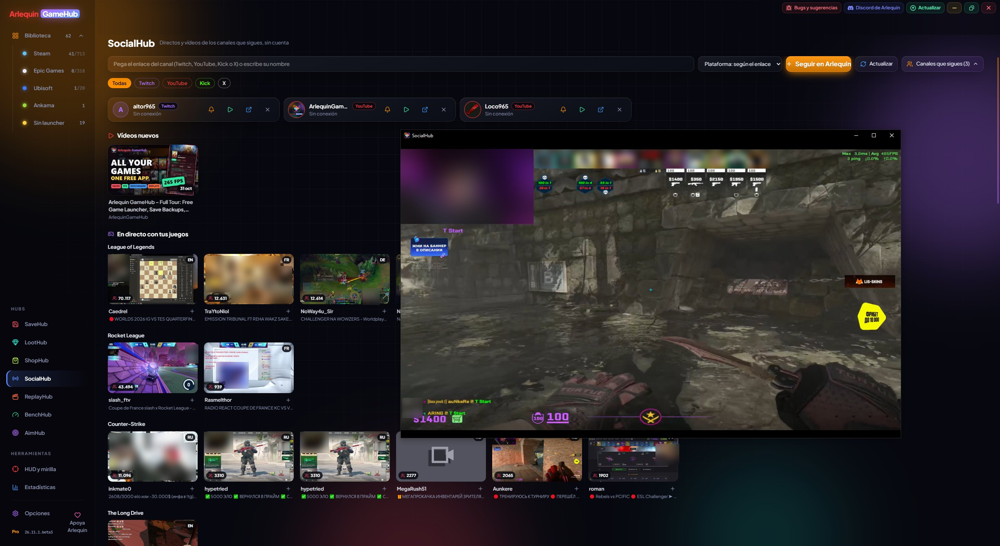

SocialHub
Twitch, YouTube ve Kick kanalların GameHub'ın içinde, hesap gerekmeden.
SocialHub, seçtiğin Twitch, YouTube ve Kick kanallarını hiçbir yerde giriş yapmadan takip eder ve canlı yayına geçtiklerinde ya da video yüklediklerinde seni haberdar eder. Onları GameHub'ın içinde, her sitenin resmi oynatıcısıyla izlersin.
Ayrıca «Oyunlarınla canlı» şu anda yüklü oyunlarını kimlerin yayınladığını gösterir; böylece yeni kanallar keşfedebilirsin. Kanal listen yalnızca bilgisayarında saklanır.
«Oyun seç» ile ilgilenmediklerini gizler, Twitch'in en çok izlenenlerinden başkalarını eklersin ve yayınları hangi dillerde izleyeceğini (birkaçı aynı anda) tüm oyunlar için ya da her biri için seçersin.
Nasıl kullanılır
- SocialHub kenar çubuğunda, Hub'lar altında.
- Kanalın bağlantısını yapıştır veya adını yaz ve platformu seç.
- Her kanalın zili sana bildirim gönderip göndermeyeceğini belirler; X için yalnızca bağlantı saklanır.
- Yan menüden kaldırırsan SocialHub hiçbir şeyi denetlemez.

Bir denemek ister misin?
⬇ Doğrudan indir 🛍️ Microsoft Store'dan indirWindows 10 ve 11 (64 bit) · Ücretsiz · Kendini günceller